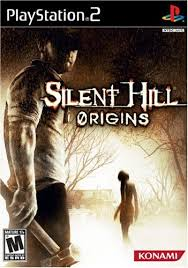
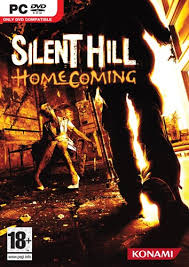
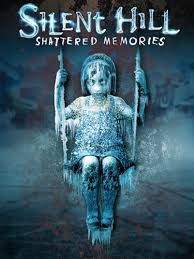
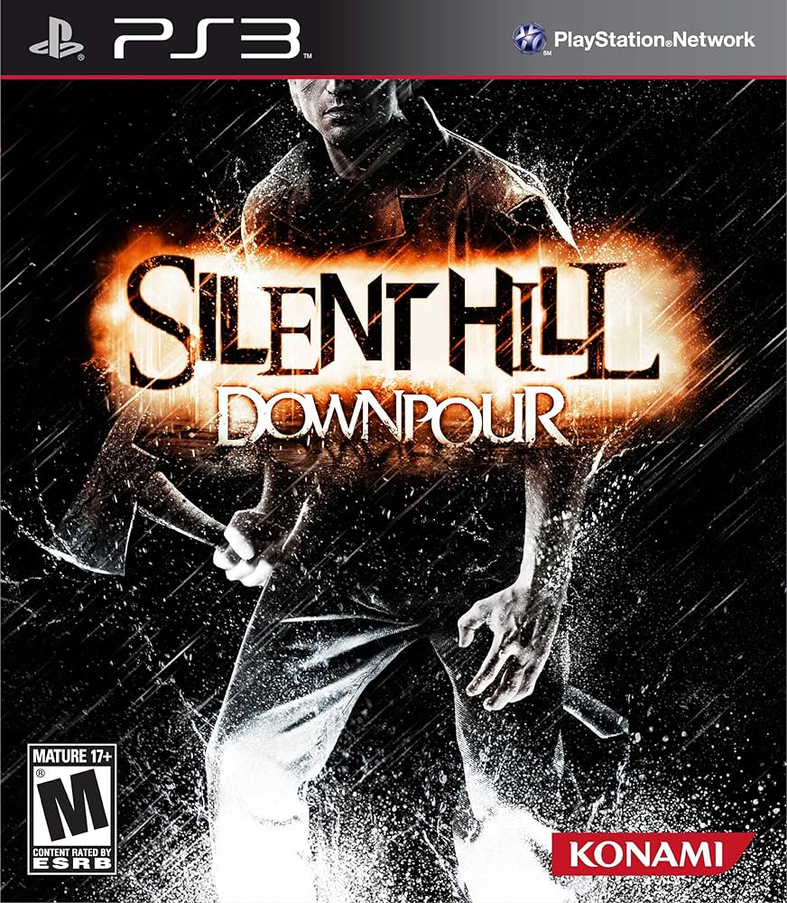
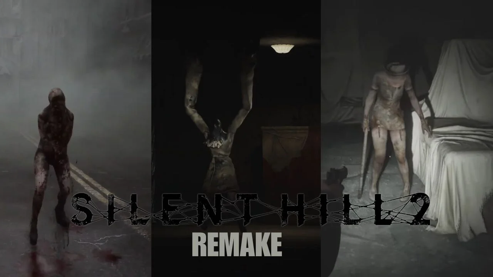

Silent Hill (1999)

O clássico que originou a franquia apresenta a jornada de Harry Mason, um escritor que viaja de férias com sua filha Cheryl. Após sofrer um misterioso acidente de carro nos arredores de Silent Hill, Harry acorda sozinho e descobre que a cidade está deserta, coberta por uma névoa espessa e neve fora de época. Durante a busca por sua filha, ele explora locais macabros, transita entre o mundo real e a terrível versão demoníaca da cidade, e desvenda os planos de um culto religioso local liderado por Dahlia Gillespie para ressuscitar um deus antigo usando o poder de uma jovem chamada Alessa.
Silent Hill 2 (2001)
Considerado um dos maiores marcos do terror psicológico nos videogames, o segundo título acompanha James Sunderland. Ele decide viajar até a misteriosa cidade após receber uma carta de sua esposa, Mary, convidando-o para encontrá-la no lugar especial deles. O grande mistério é que Mary faleceu de uma doença incurável há três anos. A trama abandona os elementos religiosos do primeiro jogo e foca na mente atormentada do protagonista, onde os monstros bizarros e cenários industriais degradados servem como manifestações físicas de sua própria culpa, luto e desejos reprimidos, incluindo o icônico perseguidor Pyramid Head.
Silent Hill 3 (2003)

Este capítulo funciona como uma continuação direta da história do primeiro jogo. A protagonista é Heather Mason, uma adolescente comum que começa a ter pesadelos bizarros e repentinamente vê o shopping local se transformar em um pesadelo de sangue e ferrugem. Perseguida por membros do culto conhecidos como A Ordem, liderados por Claudia Wolf, Heather descobre que carrega em si a reencarnação da divindade do culto e da própria Alessa Gillespie. A jornada a força a viajar até a macabra cidade turística para confrontar seu passado e vingar a morte de seu pai adotivo, Harry Mason.
Silent Hill 4: The Room (2004)

Com uma proposta inovadora para a série, o jogo acompanha Henry Townshend, um jovem que se vê inexplicavelmente trancado dentro de seu próprio apartamento, o quarto 302, na cidade vizinha de Ashfield. As janelas estão lacradas e a porta principal está acorrentada por dentro. A única saída é um buraco misterioso e escuro que surge na parede do banheiro, que funciona como um portal para realidades alternativas de pesadelo. Henry descobre que o apartamento foi o epicentro dos rituais macabros cometidos anos antes pelo assassino em série Walter Sullivan, que busca realizar o ritual dos vinte e um sacramentos.
Silent Hill: Origins (2007)

Desenvolvido originalmente para o console portátil, este jogo funciona como uma prequela que explica os eventos que antecederam o primeiro jogo da franquia. O protagonista é Travis Grady, um caminhoneiro solitário atormentado por traumas de infância que decide pegar um atalho por Silent Hill. No caminho, ele salva uma jovem severamente queimada de um incêndio residencial criminoso, que na verdade era Alessa Gillespie. Ao tentar descobrir o paradeiro da garota no hospital local, Travis se envolve com o culto religioso e descobre a mecânica de transitar voluntariamente entre o mundo da névoa e o Outro Mundo através do reflexo de espelhos espalhados pelas salas.
Silent Hill: Homecoming (2008)

A história gira em torno de Alex Shepherd, um soldado das forças especiais que retorna à sua cidade natal, Shepherd's Glen, após ser liberado de um hospital militar devido a ferimentos em combate. Ao chegar, ele encontra sua mãe em estado catatônico e descobre que seu irmão mais novo, Joshua, e seu pai desapareceram sem deixar vestígios. A busca por respostas o leva a explorar as ruas tomadas pela névoa da vizinha Silent Hill. Alex desvenda um pacto sombrio e secular realizado pelas famílias fundadoras de sua cidade natal, que exigia o sacrifício periódico de seus próprios filhos para manter uma antiga maldição adormecida.
Silent Hill: Shattered Memories (2009)

Este jogo funciona como uma reimaginação completa e psicológica do primeiro Silent Hill de 1999. O jogador controla novamente Harry Mason em busca de Cheryl, mas a jogabilidade abandona os combates tradicionais e o clima industrial de ferrugem. O Outro Mundo agora é representado por cenários congelados por um gelo azul profundo, onde o protagonista deve correr e escapar de criaturas deformadas. O grande diferencial é o teste de perfil psicológico realizado no início e durante o jogo com um terapeuta, cujas respostas alteram dinamicamente o comportamento dos personagens secundários, as roupas, os diálogos e o chocante final da história.
Silent Hill: Downpour (2012)

O jogo foca na história de Murphy Pendleton, um detento que consegue escapar após o ônibus de transporte prisional sofrer um grave acidente nos arredores de Silent Hill. O diferencial do clima desta vez é a chuva intensa e as tempestades que caem sobre a cidade, que deixam os monstros locais consideravelmente mais agressivos. Murphy explora áreas inéditas do complexo urbano, como o sistema de bondes subterrâneos e os parques florestais, enquanto lida com suas próprias memórias sobre a morte de seu filho e a terrível vingança que cometeu dentro da prisão, sendo perseguido pela figura intimidadora do Bogeyman.
Silent Hill: Book of Memories (2012)
Lançado para PlayStation Vita, este spin-off se diferencia dos demais jogos da franquia por abandonar o survival horror tradicional e adotar mecânicas de ação com visão isométrica. O jogador recebe um misterioso livro capaz de alterar eventos da própria vida e explora diversos cenários inspirados em títulos anteriores da série, enfrentando monstros conhecidos enquanto descobre segredos relacionados ao artefato.
Silent Hill: The Arcade (2007)
Desenvolvido exclusivamente para máquinas de fliperama, o jogo apresenta uma experiência em primeira pessoa com foco em combate utilizando armas de fogo. A história acompanha Eric e Tina, dois personagens que acabam presos em diferentes versões da cidade de Silent Hill enquanto tentam escapar das criaturas e desvendar os mistérios do local.
Silent Hill: Orphan (2007–2008)
Produzido para telefones celulares, o jogo apresenta três histórias independentes ambientadas em locais ligados ao universo da franquia. A experiência é focada em exploração e resolução de enigmas, trazendo referências aos eventos dos títulos principais e expandindo alguns elementos do lore de Silent Hill.
Silent Hill: Ascension (2023)
Projeto interativo lançado em formato episódico, onde a comunidade participa tomando decisões que influenciam o rumo da narrativa. A história acompanha diferentes famílias ao redor do mundo enfrentando criaturas ligadas aos seus medos, traumas e sentimentos de culpa.
Silent Hill: The Short Message (2024)
Disponibilizado gratuitamente, o jogo acompanha Anita, uma jovem que explora um prédio abandonado enquanto lida com sentimentos de isolamento, ansiedade e pressão social. A narrativa aborda temas contemporâneos e apresenta uma nova criatura conhecida como Sakura Head.
Silent Hill 2 Remake (2024)

Recriação moderna do clássico de 2001, desenvolvida pela Bloober Team. O remake mantém a história de James Sunderland, mas apresenta gráficos atualizados, câmera sobre o ombro, melhorias na exploração e novos recursos de jogabilidade, preservando os elementos psicológicos que tornaram o jogo um dos mais aclamados da série.
Silent Hill f (2025)
Ambientado no Japão da década de 1960, o jogo acompanha Hinako Shimizu em uma pequena cidade tomada por uma névoa sobrenatural e por criaturas grotescas cobertas por flores. A obra representa uma nova direção para a franquia ao explorar o terror psicológico em um cenário completamente diferente dos jogos anteriores.
Silent Hill: Townfall (em desenvolvimento)
Produzido pela No Code em parceria com a Annapurna Interactive, Townfall é um dos novos projetos da franquia anunciados pela Konami. Poucos detalhes sobre a história foram divulgados, mas o jogo promete apresentar uma abordagem inédita para o universo de Silent Hill.